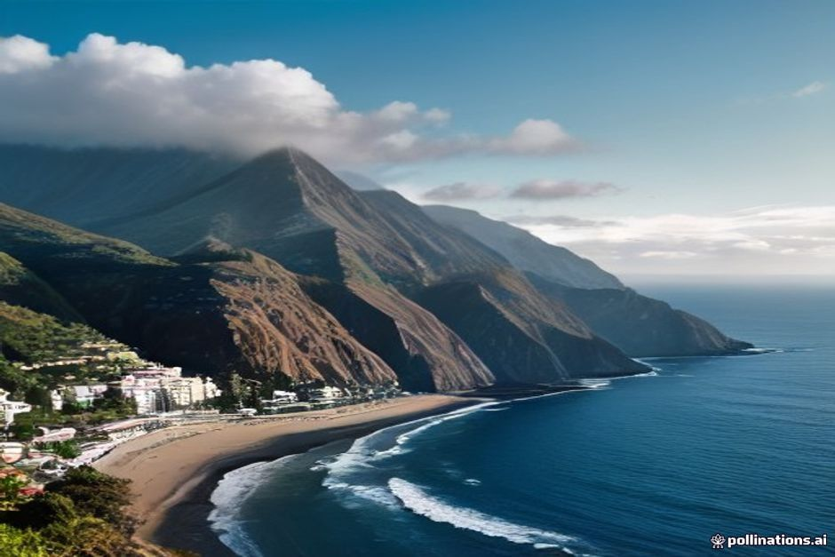

Quem vive no continente sabe o que é julho: 40 graus no Alentejo, praia cheia, ar condicionado a trabalhar sem parar. Madeira em julho é outra conversa. Faz calor, mas um calor de brisa, com o mar a subir de temperatura semana após semana e quase nenhuma chuva. O preço a pagar são as multidões e a antecedência com que é preciso reservar. Eis o que realmente se passa de junho a agosto, e como tirar partido disso, incluindo num passeio de barco na Madeira.
Quanto calor faz na Madeira em julho?
Menos do que no continente, e é essa a grande vantagem. No Funchal, as máximas rondam os 24°C em junho, chegam a cerca de 26°C em julho e ficam perto dos 27°C em agosto. As noites raramente descem dos 18 ou 19°C.
Por estar a meio do Atlântico, a ilha escapa às ondas de calor que apanham Lisboa, o interior alentejano ou o Algarve nestes meses. Vinte e sete graus com brisa marinha não se sentem como os mesmos vinte e sete graus em terra firme. Calções, sandálias e fato de banho servem para quase todos os dias.

Verão na Madeira: mês a mês
- Junho: máximas de 24°C, mar a cerca de 21°C. Dias longos, menos gente do que em agosto e o Festival do Atlântico, com fogo de artifício sobre a Baía do Funchal em quatro sábados à noite.
- Julho: cerca de 26°C no ar e 22 a 23°C na água. Música ao ar livre no Parque de Santa Catarina e pequenas festas bem madeirenses, como a da lapa no Paul do Mar.
- Agosto: perto de 27°C e 23 a 24°C no mar. É o mês mais cheio da ilha, com o feriado de 15 de agosto e, na última semana, o Festival do Vinho da Madeira a arrancar em Câmara de Lobos.
Se quer o melhor equilíbrio entre mar morno e ilha ainda respirável, a segunda metade de junho e o início de julho costumam ser um bom meio-termo.
O mar da Madeira em julho: está quente para nadar?
Está, mas convém ajustar as expectativas. Não é o Algarve em agosto. O Atlântico à volta da Madeira aquece devagar: cerca de 21°C em junho, 22 a 23°C em julho e 23 a 24°C em agosto. O pico do ano chega só em setembro, quando o oceano continua a acumular calor depois de o ar já ter começado a arrefecer.
O que pesa mais do que um grau a mais ou a menos é a ondulação. O verão traz, em geral, o mar mais calmo do ano, e é por isso que as paragens para banho funcionam melhor nesta altura. No nosso passeio de dia, a paragem na Fajã dos Padres, com prancha de paddle, é das mais certas entre junho e agosto. Dizemos "em geral" porque o mar manda sempre: se um dia não estiver bom, decide-se no momento, com os skippers.
Chove na Madeira em julho?
Quase nada. Junho, julho e agosto são os meses mais secos do ano na costa sul, e no Funchal passam-se longos períodos sem chuva que se meça. Na costa norte, em Santana, São Vicente ou Porto Moniz, há mais nuvens por causa da divisão de microclimas típica da ilha, mas mesmo aí o verão é a estação mais seca.
Quem conhece a Madeira de inverno ou da primavera sabe como é diferente. No verão, olhar para a previsão serve mais para saber a força do sol do que para temer um dia estragado.
O que levar na mala
Protetor solar primeiro, de preferência amigo dos recifes. O sol atlântico engana: a brisa disfarça o calor e a pele só dá conta à noite. Leve também:
- chapéu e uma camada leve de manga comprida para o barco;
- sapatos de água para as enseadas de rocha vulcânica;
- um casaco fino para as noites, porque o Funchal refresca depois de escurecer;
- roupa quente se vai ao Pico do Arieiro ou ao Pico Ruivo, onde pode estar mesmo frio em agosto;
- ténis confortáveis para as levadas, que se percorrem a seco durante toda a estação.
Festas de verão: o que há para ver
O verão é a época das festas na ilha. Junho abre com o Festival do Atlântico, quatro noites de sábado com fogo de artifício pirotécnico e musical sobre a Baía do Funchal, e fecha com fogueiras nas praias de calhau no São João, na noite de 23 de junho.
Em julho há música ao ar livre no Parque de Santa Catarina e eventos mais pequenos, com muito sabor local. Agosto é o mês mais animado: a 15 de agosto, dia da Assunção, as freguesias enchem-se de procissões e fogo de artifício, e na última semana do mês o Festival do Vinho da Madeira, ligado às vindimas, já está em curso em Câmara de Lobos.
Nada disto exige planeamento antecipado para ser apreciado a partir da costa. É um extra, que se soma a uma viagem pensada à volta do mar e da serra.

O verão é mesmo a melhor altura para ir à Madeira?
Para mar morno, dias longos e probabilidade alta de sol, é difícil fazer melhor. Mas é também a época mais concorrida e mais cara. Voos, hotéis e passeios esgotam com semanas de antecedência, sobretudo as noites de julho e agosto. Agosto é o pior caso: as férias escolares da Europa coincidem com o feriado de 15 de agosto e com o arranque do Festival do Vinho.
Se fugir à multidão e ao preço pesa mais do que um grau de mar, a primavera tardia e setembro oferecem temperaturas parecidas e muito mais disponibilidade. Setembro até tem o mar mais quente do ano. Mas se o verão é quando pode viajar, a regra é simples: reserve o barco e a mesa do restaurante antes de aterrar, não depois.
O verão não torna a Madeira melhor. Torna apenas a água difícil de recusar.
Como aproveitar o verão num passeio de barco
A Chifbay parte da Marina do Funchal, Pontão C, e leva só um grupo de cada vez, até 5 pessoas, com dois skippers madeirenses licenciados. Os preços são para o barco inteiro, não por pessoa.
- Passeio de dia, às 10:00 ou às 14:00: 2 h 30 até à Ribeira Brava por 500 EUR, ou 3 h até ao Ponta do Sol por 600 EUR. Passa por Câmara de Lobos e pelo Cabo Girão, com banho e pranchas de paddle na Fajã dos Padres.
- Passeio ao pôr do sol: parte 1 h 15 antes do pôr do sol, todo o ano. 2 h até ao Cabo Girão por 400 EUR, ou 2 h 30 até à Ribeira Brava por 500 EUR. Não inclui paragem para banho.
Comida e bebidas a bordo, vídeo 360° Insta360, imagens de drone (se o tempo deixar) e fotografias com câmara a sério estão incluídos em todos os passeios. Pode cancelar sem custos até 24 horas antes da partida. Para detalhes, veja as informações práticas e as experiências, ou o que dizem as avaliações. Se quiser comparar opções, tem também a lista dos passeios de barco.
Em julho e agosto, escolha primeiro o dia e a hora: o pôr do sol enche-se depressa. E, seja qual for a semana, veja a previsão um ou dois dias antes em vez de confiar numa média sazonal. Os microclimas da Madeira fazem com que uma manhã enevoada no Funchal dê lugar a uma tarde limpíssima no mar.